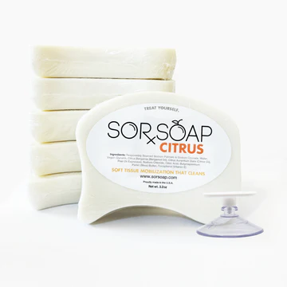

Why Choose Organic Soap? The Benefits You Need to Know
If you’re on the fence about switching to organic soap, you’re not alone. More people are realizing the importance of choosing natural skincare products that are free from harmful chemicals and synthetic fragrances. Here are the top reasons why organic soap is better for your skin:
- No Harmful Chemicals: Organic soap is made with natural, non-toxic ingredients that are safe for your skin. Unlike conventional soaps, which often contain parabens, sulfates, and artificial fragrances, organic soaps are gentle and nourishing.
- Better for Sensitive Skin: If you have sensitive skin, you know the struggle of finding the right products. Organic soap is gentle and nourishing, reducing the risk of irritation and breakouts. Ingredients like aloe vera, chamomile, and lavender soothe and calm your skin.

- Moisturizing Properties: Organic soaps are packed with natural oils like olive oil, coconut oil, and shea butter, which provide deep moisture and nourishment. These ingredients help to keep your skin hydrated without leaving it feeling greasy or heavy.
- Eco-Friendly and Cruelty-Free: By choosing organic soap, you're supporting eco-friendly brands that use sustainable practices in the production and packaging of their products. Most organic soap companies, including SorSoap, are cruelty-free and committed to reducing their environmental impact.
How to Choose the Right Soap for Sensitive and Dry Skin
When choosing soap for sensitive or dry skin, it’s essential to look for natural ingredients that provide hydration, nourishment, and healing properties. Organic soaps are perfect for this, as they contain natural oils and botanicals that work to restore and maintain the skin's moisture balance.